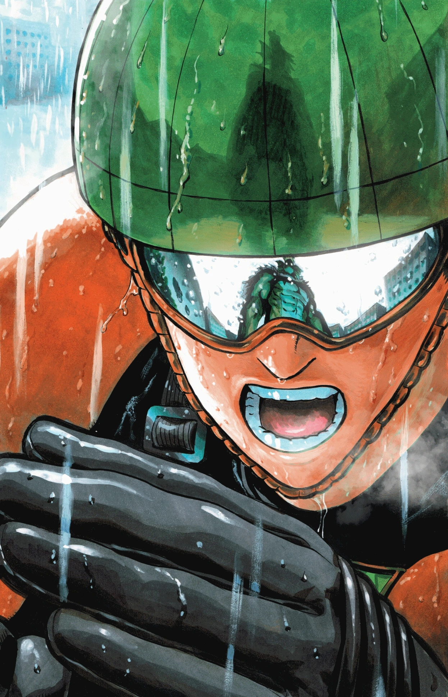

One-Punch-Man hero ranking and monster threat systems
- Heroes
- Monsters
- Threat-levels

The World of One-Punch-Man
Most at first glance don't give One-punch-man's setting much thought. It's just the background of a guy that one shots everybody right? Actually, it's so much more. Here are some facts on how the world of One-punch-man operates.
